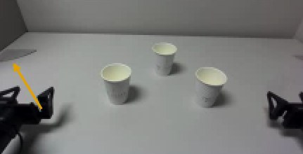
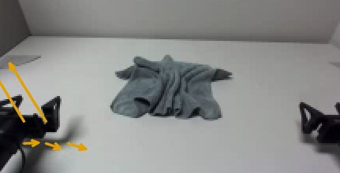
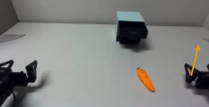
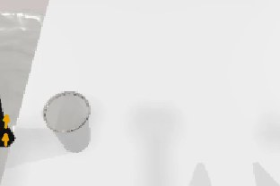
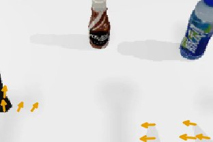
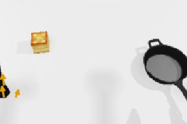
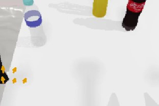
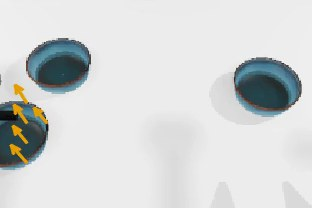
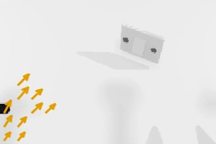
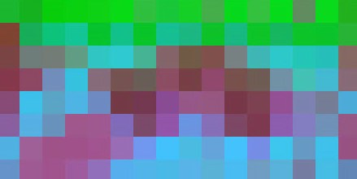
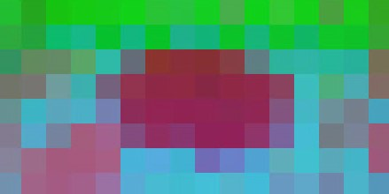
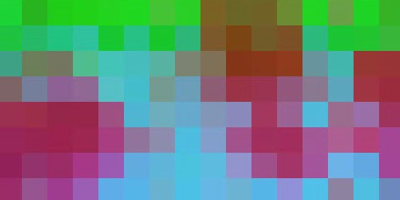
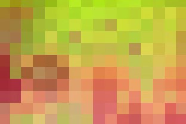
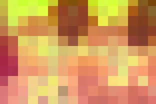
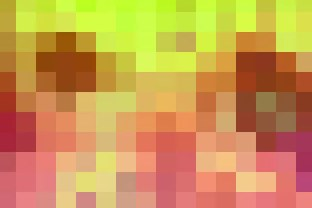
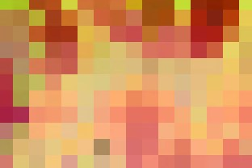
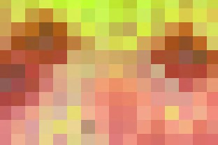
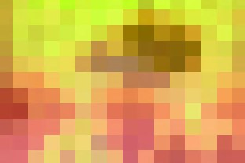
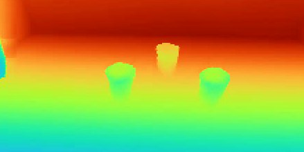
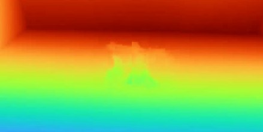
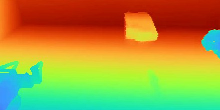
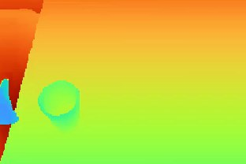
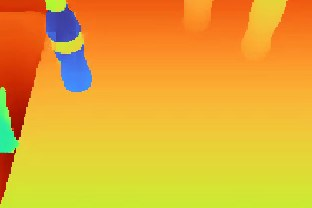
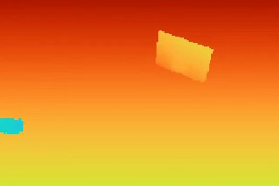


Generating future tracks prediction
More real-world rollouts
1 / 8
Abstract
ModAR compared to representative existing WAM formulations
Click a diagram to replay the animation
Future modalities are predicted sequentially, each conditioned on earlier predictions; actions are generated last.
All modalities and actions generated simultaneously with joint attention.
All modalities and actions generated independently; future prediction is skipped at inference time.
Model Architecture
Click the diagram to replay the animation
Current DINO, depth, and RGB observations are embedded into tokens and processed by a shared diffusion transformer (DiT). The DiT combines shared cross-modality blocks with modality-specific experts and output heads. Robot configuration and a learned task embedding condition every DiT layer through adaLN. ModAR then denoises point tracks, DINO, depth, and RGB sequentially—each conditioned on earlier denoised modalities—and predicts robot actions last.
Results: Simulation
WAM Formulation Comparison
Average success rate over six RoboTwin tasks. All models are trained with 50 action-labeled demonstrations per task. We then add demonstrations with their action labels removed to increase the total demonstration count from 50 to 250 to 1,250. Independent-noise uses the same simultaneous generation as Unified at inference, but samples a separate flow timestep for each modality at each training step, following Flex-π. ModAR achieves the highest average success rate at every data scale and benefits most from the additional actionless data.
Predicted Modality Set Comparison
Average success rate for ModAR models trained with individual modalities and progressively larger modality sets, following the generation order tracks → DINO → depth → RGB. We find it beneficial to predict future tracks, DINO, and depth, while additionally predicting RGB provides no consistent gain.
Comparison to a video-model-initialized WAM
We fine-tune Flex-π, initialized from the Wan2.2-TI2V-5B video model, on the same RoboTwin data at the 250-total-demonstration scale (50 action-labeled). ModAR reaches a slightly higher average success rate with approximately 200× fewer parameters, 20× fewer training FLOPs, and no pretraining.
Simulation Ablations
Average success rate over six RoboTwin tasks at the 250-demonstration scale (50 action-labeled). Context noise (noise added to previously generated modalities during training) is critical for robust autoregressive generation. Reversing the generation order to RGB → depth → DINO → tracks also reduces performance, supporting the choice to generate compact, structured modalities first. Removing tracks, DINO, or depth hurts more than removing RGB.
Results: Real-World Bimanual Manipulation
Real-World Training Data
Formulation Comparison
Real-world success rates with 30 trials per method per task. All methods use 100 robot demonstrations per task; ModAR and Unified additionally use 200 in-domain actionless human demonstrations and 1,000 out-of-domain EgoDex demonstrations. Real-world WAMs observe and predict tracks, DINO, and depth. ModAR achieves the highest success rate on all three tasks.
Learning from Actionless Human Data
We train separate ModAR models with just 100 robot demonstrations per task, then adding 200 in-domain actionless human demonstrations (used to supervise future-observation predictions, but not action prediction), and then also adding 1,000 out-of-domain human demonstrations from EgoDex (used similarly). The average success rate progressively improves from 70.0% to 81.1% to 83.3%.